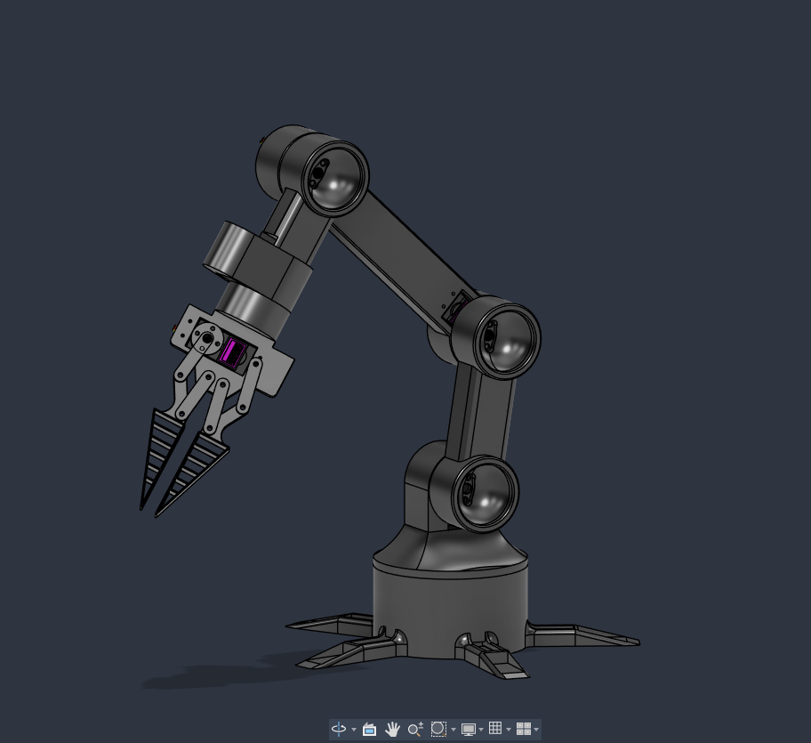
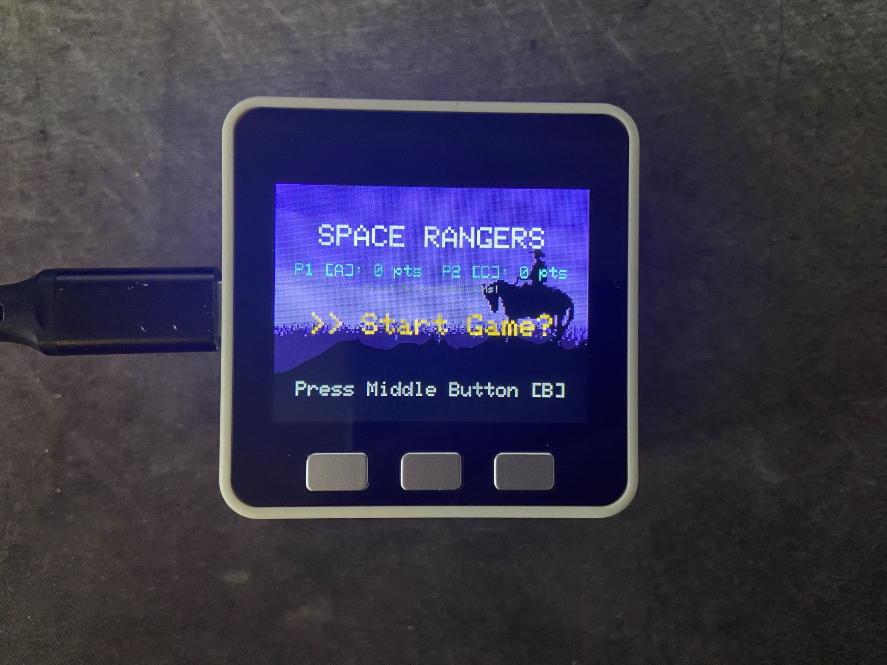
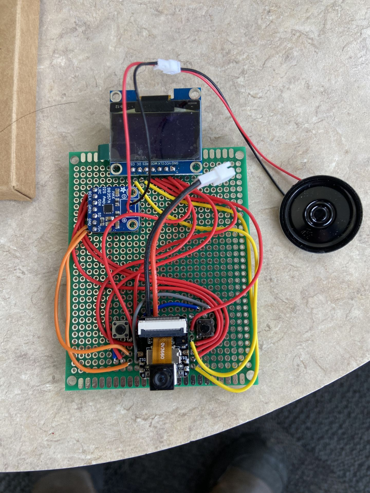
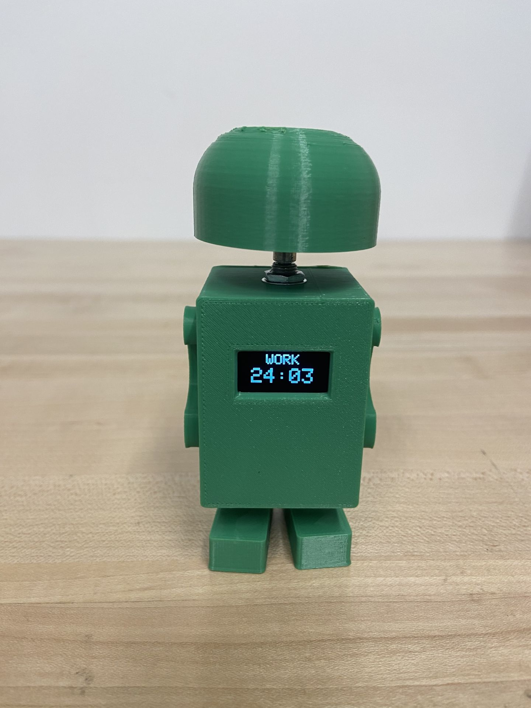
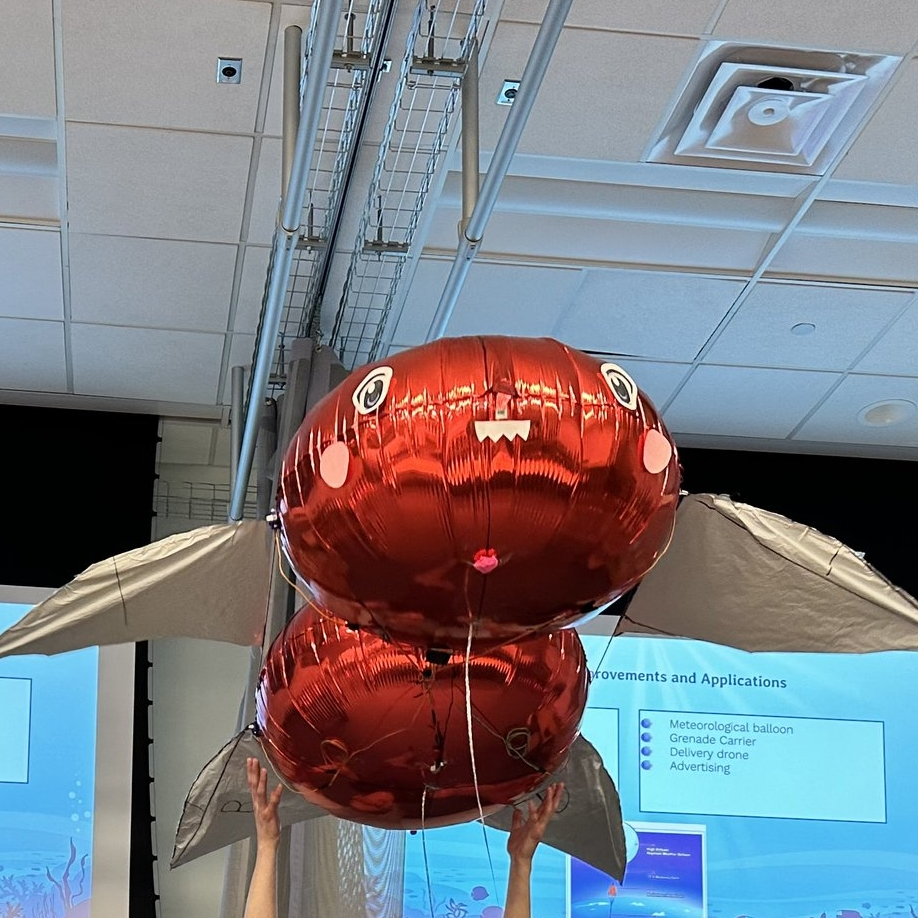
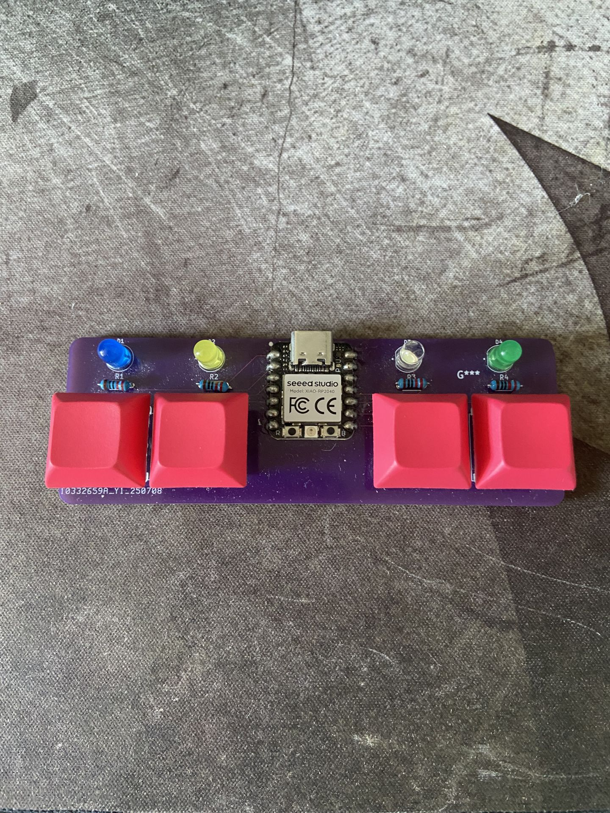
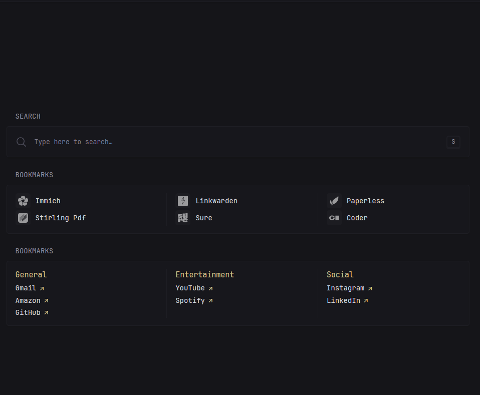

6-DOF Robotic Arm
This is a brief description of the project.
July 2026 – Present
A Junior Electrical Engineering Student at George Mason University.
I am a tinkerer. Even though I am currently working as a research assistant at my university robotics lab researching how a group of robots can interact with the environment (Big Hero 6 Microbots style), my brain is always coming up with new things to build. To channel that itch, I take on personal engineering projects inspired by creators like Mark Rober and Aaed Musa, turning what I learn in my Electrical Engineering degree into real-world projects. Actually, I like to go beyond what the classroom teaches me. One thing that my degree has not prepared me for is leading a team. I am currently the lead instructor at my university summer robotics camp for high school students. It is an understatement to say that leading a team of five instructors to design a one-week curriculum with daily lectures, demos, and hands-on activities was a very intense experience. Fortunately, my three years of being the head technician for sound and special effects at a high school theater department have prepared me well. I understand the importance of clear organization, juggling a multitude of tasks, and fostering strong team relationships. I do have a life outside of engineering too! You can usually find me: hiking with friends, playing guitar, or reading sci-fi and dystopian novels. If you are looking for a person who builds and is passionate about the final product, connect with me and we can have a chat. Current Personal Project: 6-DOF Robot Arm
Here are some of the projects I have worked on:

This is a brief description of the project.
July 2026 – Present

This is a brief description of the project.
March 2026

This is a brief description of the project.
February 2026

This is a brief description of the project.
October 2025 – December 2025

This is a brief description of the project.
September 2025 – November 2025

This is a brief description of the project.
June 2025 – August 2025

This is a brief description of the project.
May 2022 – Present